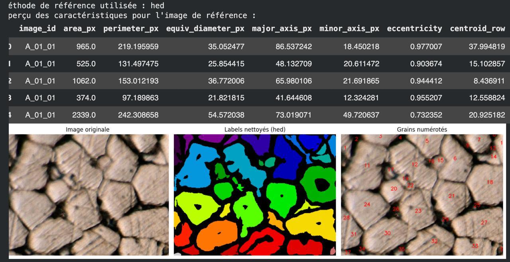

Estimation automatisée de la granulométrie sur micrographies
Conception d'une chaîne reproductible de traitement d'images pour segmenter les grains d'un minerai et estimer leur distribution granulométrique à partir de micrographies.
Méthode
Prétraitement et calibration pixel–micron, comparaison de segmentations classiques (seuillage et gradient Canny), détection de contours HED et expérimentation d'un U-Net combinant l'image et des cartes de contours. Les masques sont évalués avec Dice, IoU, précision et rappel.
Mesures & résultats
Les composantes segmentées alimentent des mesures par grain : aire, périmètre, diamètre équivalent, axes principaux et secondaires, circularité et rapport d'aspect. Le notebook rassemble 7 623 enregistrements et produit des tableaux et distributions granulométriques, en pixels comme en unités physiques.